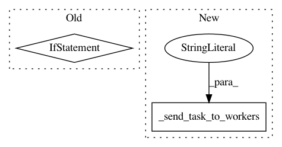

6072b0695388307205e0954369f1932e23444993,tmtoolkit/preprocess/_tmpreproc.py,TMPreproc,tokens_to_lowercase,#TMPreproc#,320
Before Change
return self
def tokens_to_lowercase(self):
return self.transform_tokens(string.lower if sys.version_info[0] < 3 else str.lower)
def stem(self):
self._require_tokens()
After Change
self._invalidate_workers_tokens()
logger.info("transforming tokens to lowercase")
self._send_task_to_workers("tokens_to_lowercase")
return self
def stem(self):
In pattern: SUPERPATTERN
Frequency: 4
Non-data size: 2
Instances
Project Name: WZBSocialScienceCenter/tmtoolkit
Commit Name: 6072b0695388307205e0954369f1932e23444993
Time: 2019-02-19
Author: markus.konrad@wzb.eu
File Name: tmtoolkit/preprocess/_tmpreproc.py
Class Name: TMPreproc
Method Name: tokens_to_lowercase
Project Name: WZBSocialScienceCenter/tmtoolkit
Commit Name: 959fcc4f5dd2972a1894041a3aff1505f61fcf93
Time: 2017-08-22
Author: markus.konrad@wzb.eu
File Name: tmtoolkit/preprocess.py
Class Name: TMPreproc
Method Name: use_ngrams_as_tokens
Project Name: WZBSocialScienceCenter/tmtoolkit
Commit Name: 959fcc4f5dd2972a1894041a3aff1505f61fcf93
Time: 2017-08-22
Author: markus.konrad@wzb.eu
File Name: tmtoolkit/preprocess.py
Class Name: TMPreproc
Method Name: tokenize
Project Name: WZBSocialScienceCenter/tmtoolkit
Commit Name: 959fcc4f5dd2972a1894041a3aff1505f61fcf93
Time: 2017-08-22
Author: markus.konrad@wzb.eu
File Name: tmtoolkit/preprocess.py
Class Name: TMPreproc
Method Name: generate_ngrams